Cole Granof
I am a computer science student at WPI with a wide range of interests. Unsurprisingly, I'm a big fan of computers. I love to program, especially when it relates to graphics and game development. I have also always been interested in graphic design, art and animation. I'm always trying to learn new things and explore the ways I can apply my knowledge. This website is an example of that. Once you're done with this page, I hope you take the opportunity to explore the rest of this site and check out my GitHub. Anyway, I hope you have fun!